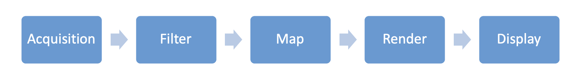

Workflows
A workflow is a net of Vistle modules which represent processing steps and implements a visualization pipeline. The necessary stages when creating a workflow strongly depend on the individual application. However, the following pipeline can be used as a reference:

Acquisition
First, data needs to be imported, which is typically retrieved by reading from files (allthough dynamic connection to in-situ simulations is supported as well). Reader modules are provided for data import from files, for a number of different file formats (e.g. OpenFOAM, WRF, Nek5000). Moreover, they often allow to refine data to be read by setting limits in timesteps or selecting certain variables only.
Examples: ReadCovise, ReadFoam, ReadModel, ReadNek5000, ReadTsunami, ReadWrfChem
Filter
Features of interest can be extracted from the data set through filter modules. These include, among others, cropping geometries, selecting specific grid layers or the surface of a geometry.
Examples: DomainSurface, CutGeometry, IndexManifolds
Map
Mapping modules allow to visualize data values. This is achieved by mapping data values to colors or computing iso surfaces.
Examples: Color, IsoSurface
Render & Display
Rendering and displaying is implemented by the COVER module.
Examples: COVER
Other Categories
Transformation
Transform data type : CellToVert, ScalarToVec
Transform mesh type: ToTriangles
Transform coordinates: MapDrape
Transform geometries: Transform
Simulation
Simulation interfaces are provided to enable in-situ visualization. Details can be found in the Library Documentation.
Examples: LibSim
Information
Information about the data at a certain port can be printed using dedicated modules. These list, among other, the number of vertices, blocks or the type of data structure. Output is printed to the Vistle Console.
Examples: ObjectStatistics, PrintMetaData
For a complete list of available modules, please check the Module Guide